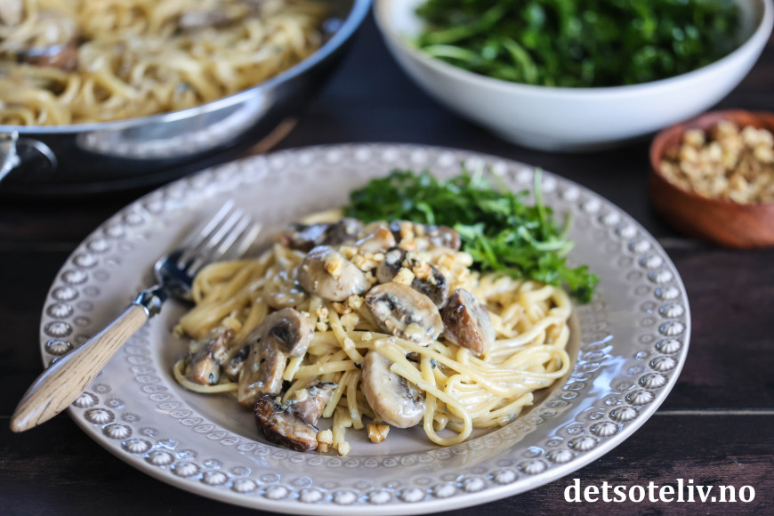

Mushroom Pasta

Description
A delicious, autumnal recipe with mushroom and gorgonzola.
Fried onion and mushroom mixed with cooked pasta and a tasteful, creamy gorgonzola sauce. Serve with chopped walnuts and an arugula salad.
Ingredients
- Creamy pasta
- 500 g linguine
- 1 tbsp butter
- 1 onion
- 3 garlic cloves
- 400 g mushrooms
- 5 dl heavy cream
- 1 tbsp soy sauce
- 200 g gorgonzola
- 50 g walnuts
- Arugula salad
- 75 g arugula
- 2 tbsp extra virgin olive oil
- 2 tbsp balsamic vinegar
- 1 tbsp honey
- 0.5 tsp salt
Steps
- Prepare the ingredients, chop the onion, garlic, and mushroom.
- Melt the butter in the pan and add onion, garlic, and mushroom. Let this cook on medium for a few minutes
till the onion and mushroom are soft and golden.
- Add cream, soy sauce, and ground pepper. Cook for 10-15 minutes till it thickens a bit.
- Start cooking the pasta according to the instructions on the package.
- Dice the cheese and add to the sauce. Cook over medium heat and stir till the cheese is melted.
- When the pasta is done, lift the pasta over to the sauce.
- Mix well and add some of the pasta water if too thick. Taste and add salt and pepper as needed.
- Serve fresh with chopped walnuts tossed over.
- For the salad, put the arugula in a bowl and mix the other ingredients together and toss over. Mix well.